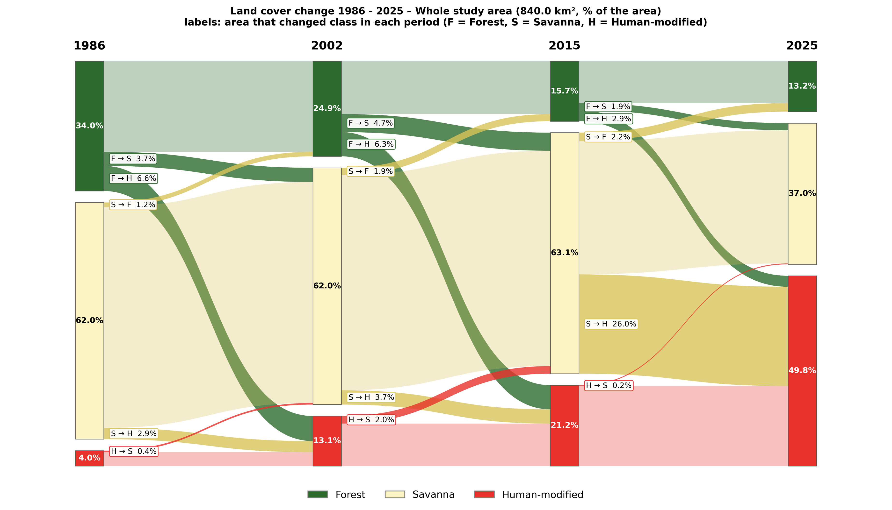
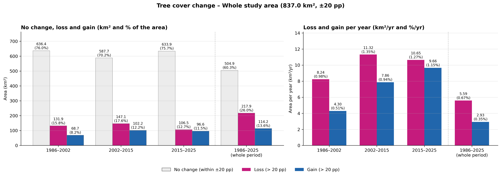
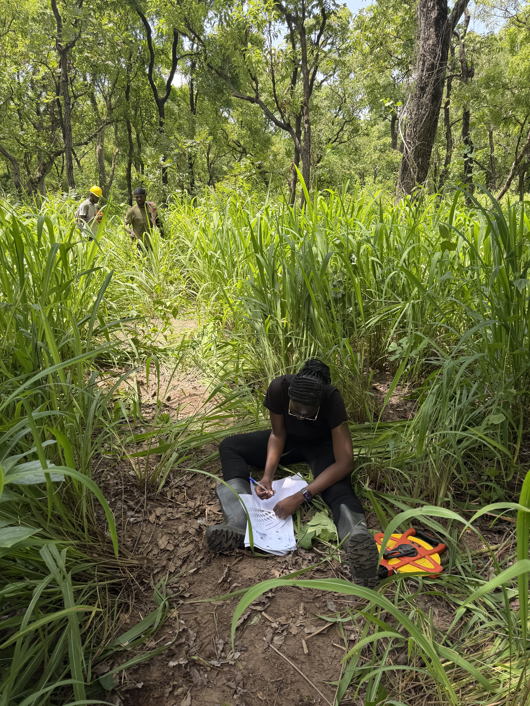
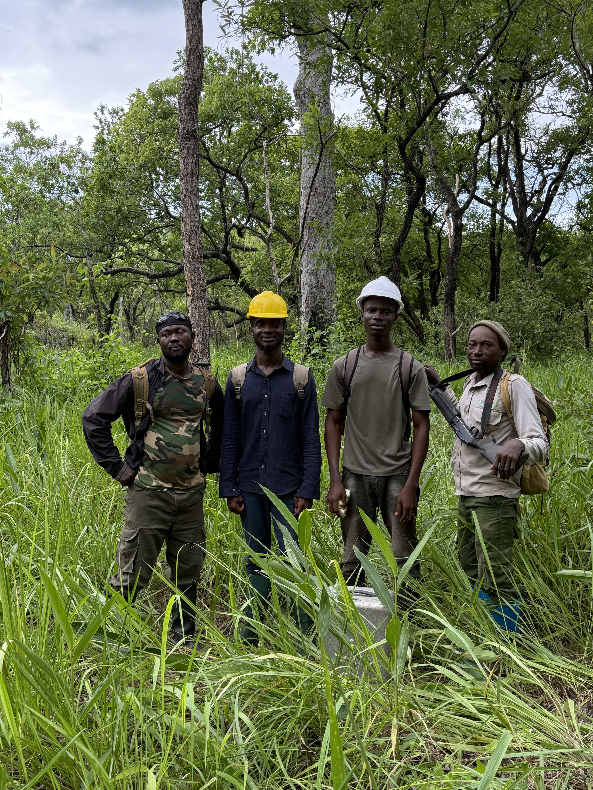
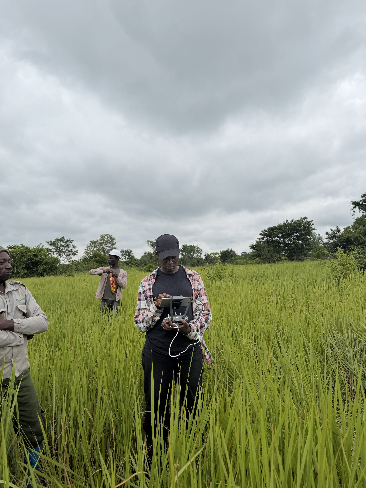

Land-Use & Land-Cover Change
Mapping historical changes in forests, savannas, woodlands, and human-modified landscapes from 1986 to 2025.
MSc Geography Research · University of British Columbia · 2025–2027
My research investigates how landscapes have changed over nearly 40 years, from 1986 to 2025, in and around Kogyae Strict Nature Reserve, Ghana's only strict nature reserve.
By combining satellite imagery, drone observations, and field measurements, I examine changes in land cover and vegetation structure, including transformations that may not be visible in conventional land-cover maps. My goal is to better understand the changing dynamics of forest and savanna ecosystems and their implications for conservation and landscape management.

Located within Ghana's forest–savanna transition landscape, Kogyae Strict Nature Reserve is the country's only strict nature reserve.
The reserve and its surrounding landscape provide an opportunity to examine how forest, savanna, and human-modified areas have changed over time.
My research connects changes in land cover with changes in vegetation structure to develop a more complete understanding of landscape transformation.
Mapping historical changes in forests, savannas, woodlands, and human-modified landscapes from 1986 to 2025.
Estimating tree cover and investigating vegetation structural changes using satellite imagery, UAV observations, and field measurements.
Identifying visible and hidden transitions and investigating structural homogenization and divergence across forest and savanna ecosystems.
Explore the spatial patterns of land-cover and tree-cover change across the study area. Select a map category below to view the corresponding research outputs.

These maps illustrate changes in the spatial distribution of forest, savanna, and human-modified landscapes between 1986 and 2025.

Tree-cover maps provide information about vegetation structure, helping identify changes that may occur even where broad land-cover categories remain the same.

The transition diagram shows how land-cover categories have shifted through time, including the expansion of human-modified landscapes.

This analysis helps distinguish areas experiencing substantial tree-cover changes from areas showing relative structural stability.
Fieldwork is an important part of my research. Vegetation surveys, UAV observations, and collaboration with field teams provide essential information for understanding the landscapes represented in satellite imagery.

Collecting field measurements and recording vegetation observations.

Working with local field teams during ecological surveys.

Collecting high-resolution observations to support vegetation mapping.
My research integrates long-term satellite observations, UAV imagery, field vegetation measurements, and geospatial machine-learning approaches.
University of British Columbia and collaborating researchers.